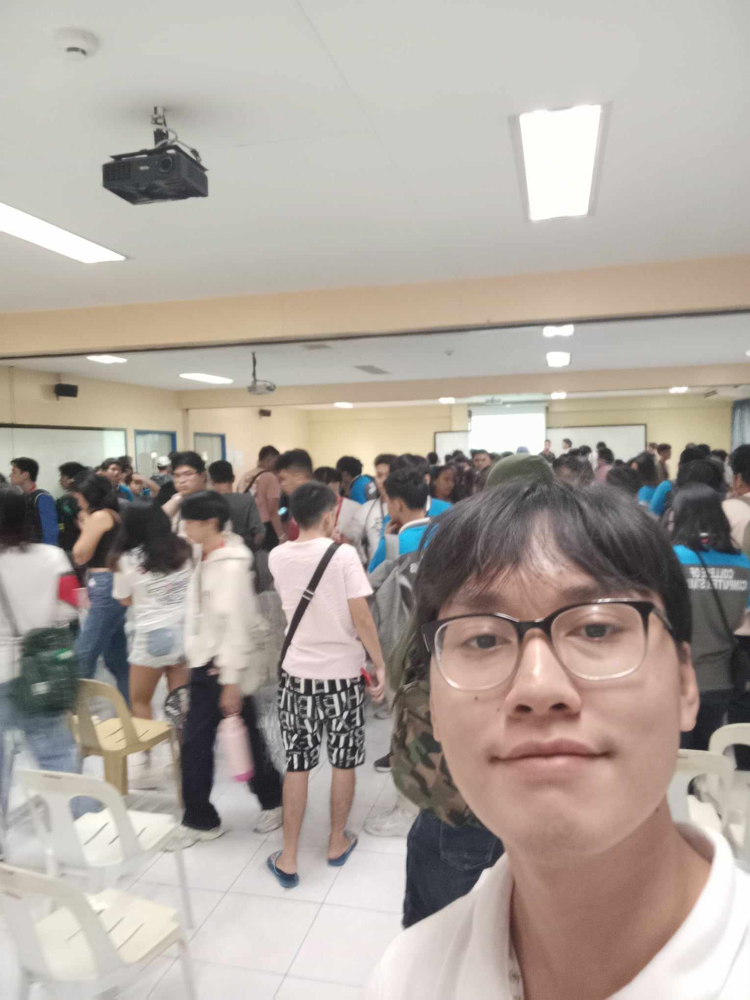
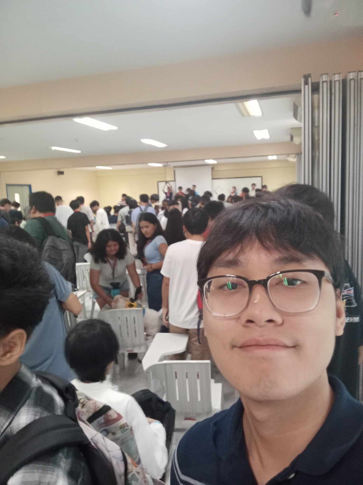
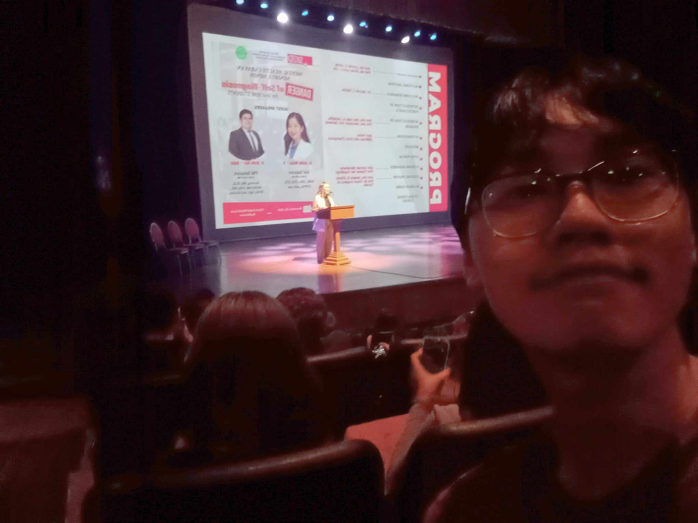
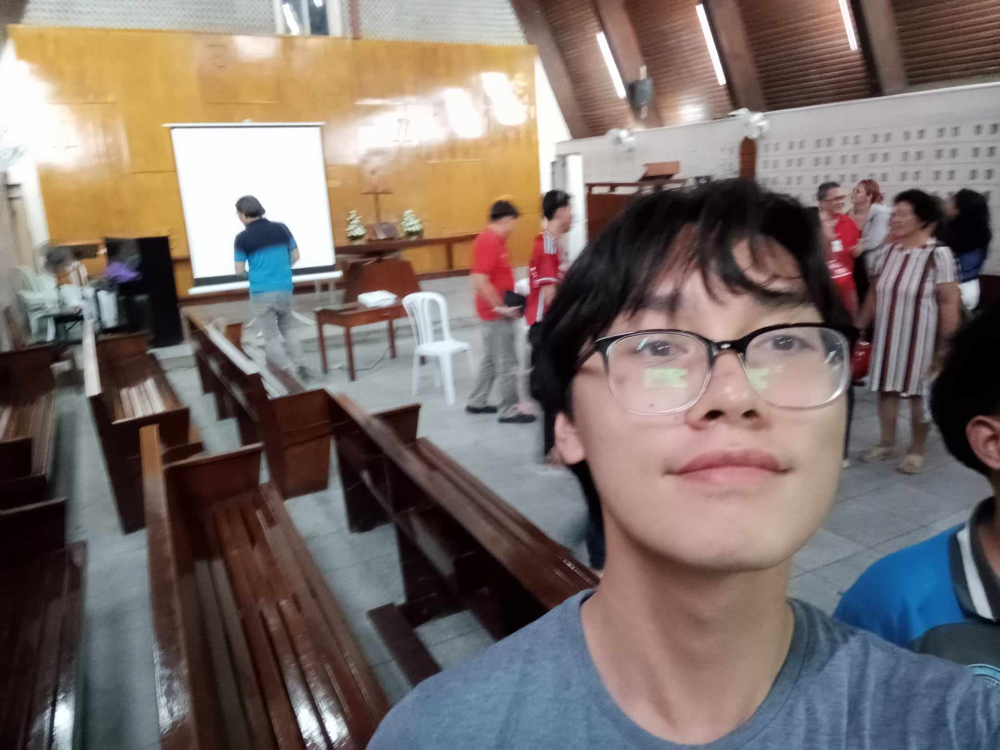
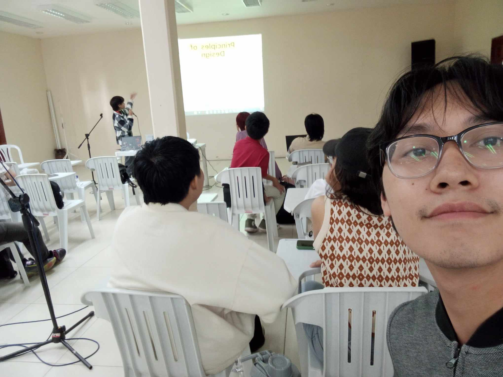

Web Development: Latest Trends and Strategies
A lecture about latest trends & technologies in web development

Big Data and IOT: Paving The Way to Our Future
A lecture showing us a future where everything's interconnected with smart tech
All Dormitory Orientation on Legal Issues
A session to learn about our legal rights and duties as dorm residents

Mental Health Caravan
A talk by Dr. Angela Yu who spoke about ways to improve mental health

SUFA Public Forum
Unfairness by the SU Admin, Faculty matters and academic policies

SUSG Infomedia Graphic Design Lecture
The lecture on the principles and trends in graphic design